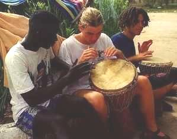

Organización Mundial del Movimiento Scout
-
Menú detallado
-
Las preguntas más frecuentes
-
SOS jefes


 El Café de una Cultura de Paz
¿Qué es el Cibercafé de la Cultura de Paz?
El Cibercafé Cultura de Paz se diseñó por la UNESCO como una fuente on-line para los Scouts de todo el mundo, con el fin de aprender y participar en la Cultura de Paz.
El Café está lleno de juegos y actividades para que los Scouts jueguen con los conceptos y vean cómo se relacionan con el movimiento Scout. Con estas actividades los Scouts podrán desarrollar conscientemente estos principios en sus actividades.
¿Cuándo es la apertura oficial del Café?
El Café será abierto oficialmente en el Jamboree Mundial de los Scouts en Chile. La pre-apertura, en el Jamboree on-line.
¿Para qué se creó el Café?
El Café es otra forma para que los Scouts participen rápidamente con la Cultura de Paz.
Cómo conseguir una recompensa inmediata participando ¡ya!
Este es el lugar para que tu unidad Scout actúe rápidamente. El Cibercafé está hecho por y para los Scouts, así que la información de tu unidad Scout es fundamental. Haz que tu unidad Scout aparezca en el Menu detallado hoy mismo. Las 100 primeras unidades scouts que participen en el Café formarán parte del menu de actividades. Además, entre los informes enviados al café, algunos serán escogidos para ser publicados on-line en el Menu del Cibercafé Global
Puedes contactar con el café escribiendo a:
UNESCO
Presidente, Grupo de trabajo para el Año Internacional para la Cultura de Paz.
Programa Cultura de Paz.
UNESCO
7, Place de Fontenoy
75007 Paris
France.
E-mail: IYCP@unesco.org